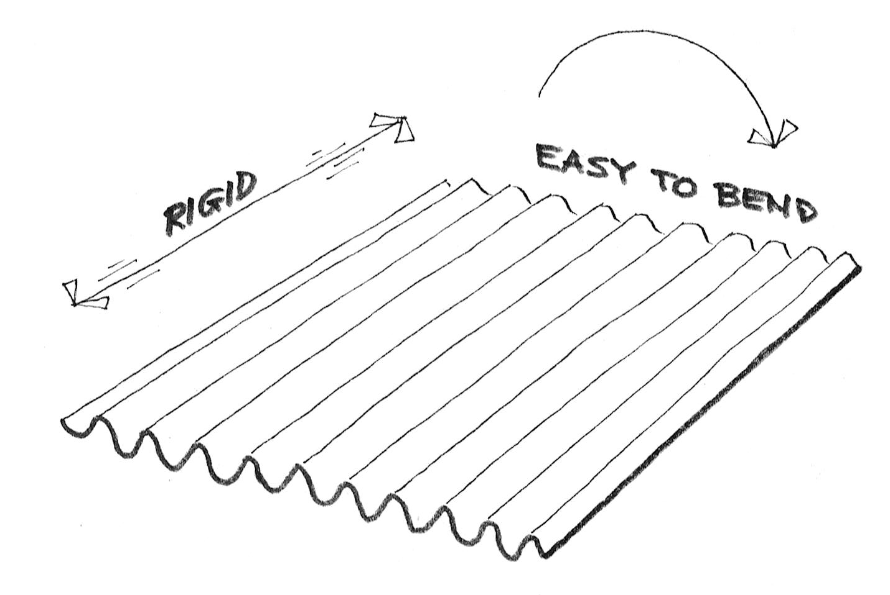
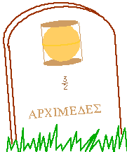
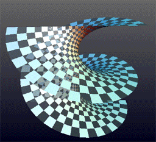

Remarks on Gauss Theorema Egregium
Remarks on Gauss Theorema Egregium
Non-isometric Surfaces
These surfaces are not locally isometric
- Sphere: \(K \equiv 1\)
- Torus: \(K\) non-constant but changing sign
- Cylinder: \(K \equiv 0\)
- Paraboloid: \(K\) non-constant and positive
Note all surfaces are locally diffeomorphic via local parametrisations!
Corrugation

Corrugation
- Folding a sheet of (paper, metal, cardboard) along a line introduces curvature but does not change the geometry provided no stretching occurs.
- Thus one principal curvature is non-zero, but Gauss’ theorem forces the other to vanish since \[ 0 \underset{\text{Gauss Theorem}}{=} K = \kappa_1 \kappa_2 \]
- Introduces rigidity in one direction and flexibility in the other.
Map Making: Archimedes

Source: Tudósok arcképcsarnoka
Map Making: Mercator

Source: Wikipedia
{kind=link}
Map Making
- No map exists preserving length, angle and area!
- Archimedes Cylinder to Sphere map preserves area: \((x, y, z) \in C \mapsto (\sqrt{1 - z^2} x, \sqrt{1 - z^2} y, z)\).
- The Mercator projection preserves angles. Good for navigation!
Helicoid and Catenoid
- Helicoid: \((v\cos(u), v\sin(u), u)\),
- Catenoid: \((\sinh(v) \cos(u), \sinh(v) \sin(u), u)\).
The Helicoid and Catenoid are locally isometric with Gauss curvature \[ K = -\frac{1}{(1 + u^2)^2} \]
Helicoid and Catenoid

Source: Wikipedia
{kind=link}
The Converse of Gauss’ Theorem is false
Here is an example of surfaces \(S_1, S_2\) for which \(K_1 = K_2\) but \(g_1 \ne g_2\).
- \(\varphi(u, v) = (u\cos(v), u\sin(v), \ln(u))\)
- \(\psi(u, v) = (u\cos(v), u\sin(v), v)\)
Exercise:
- Check that \(K_{\varphi}(u, v) = K_{\psi}(u, v)\)
- Check that \(g_{\varphi} (u, v) \ne g_{\psi} (u, v)\).